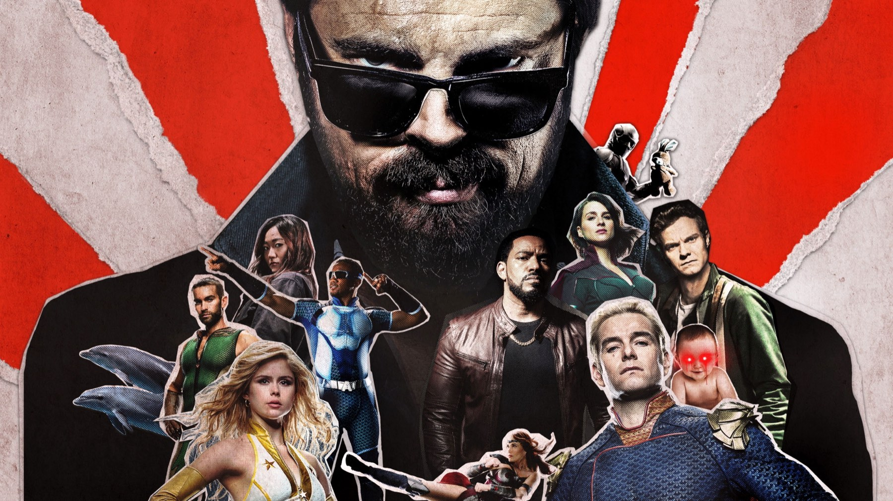

The Boys – Stagione 1
Un ragazzo con le dita della fidanzata ancora strette nelle sue e un aereo lasciato precipitare da chi doveva salvarlo
La prima stagione di The Boys ci ha convinto perché ci fa paura proprio il supereroe che di solito ci salva. Homelander porta un mantello a stelle e strisce e sorride come su un manifesto elettorale, ma dietro di lui c'è un'azienda che lo vende come un detersivo. Nel giro di quattro puntate capiamo che non alzerebbe un dito per noi se non ci fosse una telecamera accesa. La serie di Eric Kripke costruisce tutto su questa paura e regge quasi sempre; rallenta soltanto quando deve spiegarci il complotto invece di farcelo vedere.
La storia comincia da Hughie Campbell, commesso in un negozio di elettronica, e da una morte assurda. A-Train, il velocista dei Sette, corre per strada stordito dal Composto V e travolge la sua fidanzata Robin, che si disintegra davanti a lui. Billy Butcher, un ex agente che ha un conto aperto con i supereroi, lo recluta per colpire Vought, la multinazionale che gestisce i Sette. Annie January, cioè Starlight, entra invece nella squadra dei suoi sogni e scopre subito che dietro i costumi c'è un ricatto: The Deep la costringe a un rapporto sessuale minacciando di accusarla davanti a Homelander.
L'inizio che nessuna serie di supereroi aveva osato
La prima puntata, Le regole del gioco, l'ha scritta Kripke e l'ha diretta Dan Trachtenberg, e la scena di Robin dice già quale serie stiamo guardando. I due ragazzi camminano allacciati sul marciapiede, A-Train passa come un proiettile e a Hughie restano strette nel pugno le dita di lei, staccate dal resto. Il velocista si volta verso di lui per un istante e poi riparte. È una trovata da film dell'orrore, eppure è girata con la luce di una commedia romantica, e il rischio era enorme, perché con un dettaglio sbagliato la sequenza sarebbe diventata una barzelletta sanguinolenta. Invece fa male e fa ridere nello stesso momento, ed è questo il registro che la serie terrà fino all'ultimo capitolo.

La scena che vale la stagione
Arriva nella quarta puntata, La femmina della specie. Alcuni dirottatori prendono un volo di linea e Vought manda Homelander e Queen Maeve a salvare i passeggeri. Homelander però, con la vista laser, distrugge per sbaglio la cabina di pilotaggio, e a quel punto l'aereo è spacciato. Maeve propone di guidarlo fino a terra, ma lui risponde che si spezzerebbe in due. Lei chiede allora di portare in salvo i passeggeri uno alla volta, e lui ribatte che ci vorrebbe troppo tempo. Così se ne vanno in volo e lasciano a bordo tutti quanti, mentre Maeve si volta a guardare. Antony Starr recita con il distacco di un manager che chiude una pratica, e quel distacco ci ha spaventato più di qualunque esplosione, perché il problema di Homelander è il conto dei costi e dei benefici, mai i suoi poteri.
Qui la serie si allontana dal fumetto di Garth Ennis e Darick Robertson, e secondo noi ci guadagna. Nell'originale l'aereo dirottato era uno di quelli dell'11 settembre, e la strage nasceva da un salvataggio fallito per colpa di tutti i Sette. La serie invece la trasforma nella scelta di un uomo solo, con una testimone accanto, e così il volo diventa il primo nodo del rapporto tra Homelander e Maeve. Nel fumetto i supereroi erano incapaci; nella serie invece Homelander decide, e Maeve lo lascia fare. È una colpa più piccola nei numeri, ma molto più pesante da guardare.
Il colpo vero, però, arriva dopo. Davanti alla folla Homelander sfrutta la tragedia per chiedere che i supereroi entrino nell'esercito, mentre Madelyn Stillwell, la dirigente di Vought interpretata da Elisabeth Shue, lo guarda soddisfatta dietro le quinte. Kripke ha detto che proprio quel capitolo gli ha chiarito che cosa fosse la serie: «È stato allora che mi sono detto: oh, ho capito. Adesso ho capito». Ci è successo lo stesso, perché da quel momento The Boys smette di essere una parodia dei film Marvel e diventa una storia su chi decide che cosa dobbiamo vedere.
Cosa non funziona
La sesta puntata, Gli innocenti, si ferma a spiegare. Mother's Milk mette sul tavolo le prove: Samaritans' Embrace, un'associazione benefica pagata da Vought, spedisce il Composto V negli ospedali facendolo passare per vaccino contro la polio. È la rivelazione che pesa su tutto ciò che verrà, ma arriva come un rapporto letto ad alta voce. Nella stessa puntata il passato di Kimiko lo scopriamo perché il telepata Mesmer le legge nella mente, e Butcher racconta a Hughie che cosa Homelander ha fatto a sua moglie Becca otto anni prima. Tre segreti consegnati a parole, uno dopo l'altro, quando fino a quel punto la serie ci aveva sempre mostrato le cose. Per due puntate la caccia di Butcher perde ritmo.
Nello stesso tratto Hughie e Annie si innamorano dentro una commedia degli equivoci con le identità nascoste, ma la trovata sa di già visto, quindi la loro storia interessa meno di quella di Maeve. Anche la violenza ogni tanto si compiace di sé: Antonio Cuomo, su Movieplayer, avvertiva già il 26 luglio 2019 che il cinismo e il sangue non sono per tutti, e su questo non possiamo dargli torto.
Il confronto con il seguito mette a fuoco il pregio di questo primo ciclo. Nella nostra recensione di The Boys 2 abbiamo scritto che le prime due puntate girano a vuoto perché devono presentare troppe storie; qui invece le storie sono poche e corrono dal primo minuto. Nella quinta stagione, al contrario, il finale accelera così tanto da lasciare indietro alcuni personaggi. Per questo la prima resta la più compatta: un'idea sola, sviluppata fino all'ultima puntata, La resa dei conti, che chiude la partita con Stillwell e ne apre un'altra con Butcher, tanto che viene voglia di cominciare subito il seguito.
Dal fumetto alla tv, con una deviazione da Cinemax
The Boys nasce dal fumetto di Garth Ennis e Darick Robertson e doveva diventare una serie di Cinemax, ma il progetto è finito ad Amazon con Seth Rogen ed Evan Goldberg come produttori esecutivi e Kripke come showrunner. Le riprese si sono svolte a Toronto dal 22 maggio al 25 settembre 2018, e la fiducia dell'azienda era alta, perché Amazon ha rinnovato la serie il 19 luglio 2019, una settimana prima che uscisse. Tutti gli otto episodi sono arrivati su Prime Video lo stesso giorno, il 26 luglio 2019, e su Rotten Tomatoes questo primo ciclo ha l'85% di recensioni positive su 106, mentre su Metacritic ha 74 su 100 con 19 critici; agli Emmy ha ricevuto una candidatura per il montaggio sonoro. Cuomo, su Movieplayer, notava che la serie aggiorna il fumetto all'epoca dei social e del marketing: per noi è ciò che la rende attuale ancora oggi, perché la scena dell'aereo funziona proprio come un comunicato stampa.
Per chi è e per chi no
È per chi si è stancato dei supereroi senza macchia e vuole vedere che cosa succede quando il potere finisce in mano a qualcuno che vive di sondaggi. Chi non regge la violenza esplicita, invece, deve saperlo prima, perché la serie la usa come linguaggio fin dalla scena di Robin e nei capitoli successivi la dose aumenta. Chi vuole cominciare The Boys deve partire da qui, dato che tutto ciò che accade dopo, da Becca al figlio di Homelander, nasce in questo finale. Le otto puntate sono su Prime Video, incluse nell'abbonamento insieme alle altre quattro stagioni.
La stagione più compatta di The Boys: si apre spiazzando, fa di Homelander il cattivo più inquietante della tv di quegli anni e si concede una pausa a metà, quando spiega troppo. Da vedere, ed è l'unico punto da cui cominciare.
Domande frequenti
Quanti episodi ha la prima stagione di The Boys?
Otto, usciti tutti insieme su Prime Video il 26 luglio 2019.
In quale episodio Homelander abbandona l'aereo?
Nel quarto, La femmina della specie: Homelander e Queen Maeve lasciano precipitare un volo dirottato con i passeggeri a bordo.
Dove vedere la prima stagione di The Boys?
Su Prime Video, inclusa nell'abbonamento insieme a tutte le altre stagioni.
Fonti consultate (9)
- Wikipedia – The Boys season 1
- Wikipedia – Episodi di The Boys (prima stagione)
- Wikipedia – The Name of the Game (The Boys)
- Wikipedia – The Female of the Species (The Boys)
- Wikipedia – Homelander
- Wikipedia – The Innocents (The Boys)
- Movieplayer – The Boys, recensione (Antonio Cuomo)
- /Film – Eric Kripke sul quarto episodio di The Boys
- TMDB – The Boys